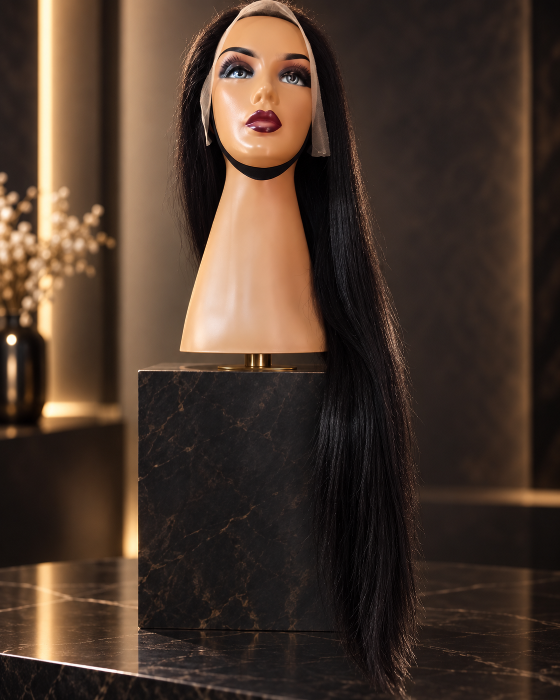
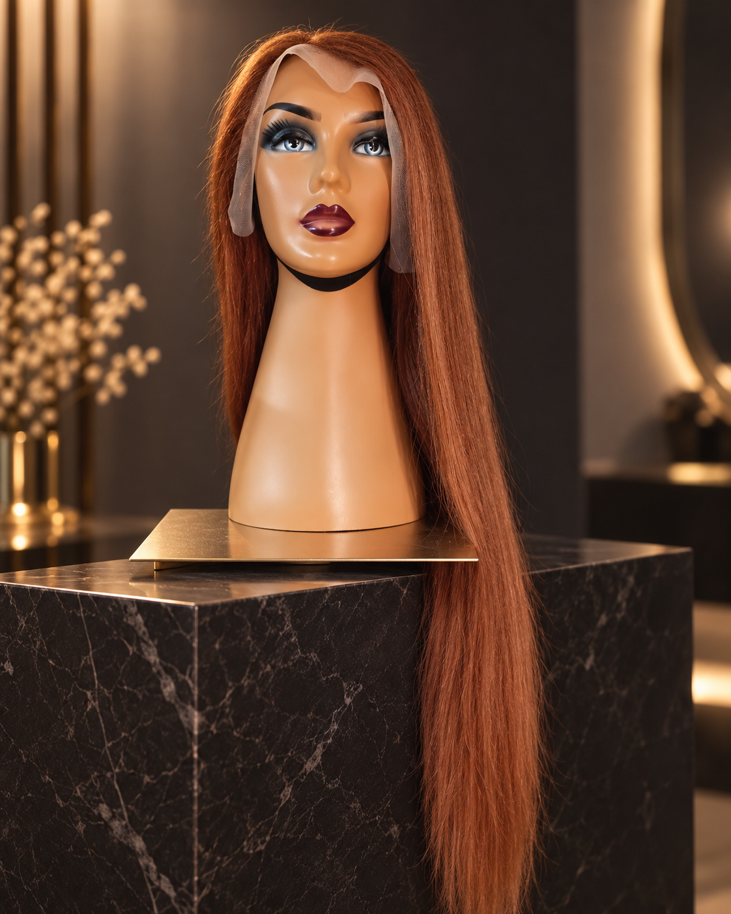
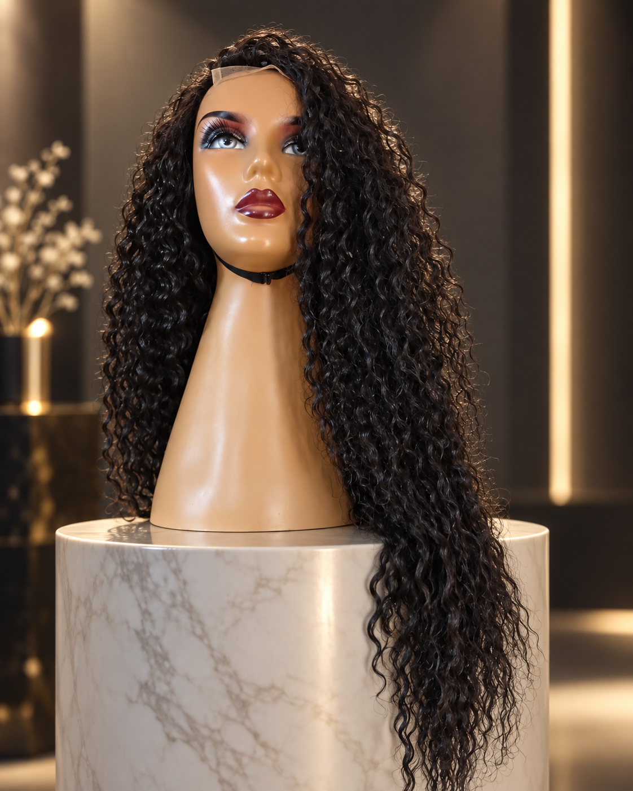

Uzun Düz Peruk · Siyah
₺8.500
Yaklaşık 70 cm uzunluğunda, insan saçı içeren karışımlı yarı doğal peruk.
WhatsApp ile sipariş verTarzınıza uygun modeli seçin. Sipariş ve stok bilgisi için WhatsApp üzerinden bizimle iletişime geçin.

Yaklaşık 70 cm uzunluğunda, insan saçı içeren karışımlı yarı doğal peruk.
WhatsApp ile sipariş ver
Yaklaşık 70 cm uzunluğunda, insan saçı içeren karışımlı yarı doğal peruk.
WhatsApp ile sipariş ver
Yaklaşık 70 cm uzunluğunda, birinci kalite saç ekleme malzemesiyle hazırlanmış kıvırcık peruk.
WhatsApp ile sipariş verÖdeme bilgileri ve stok durumu sipariş onayında paylaşılır. İade ve cayma koşulları, yürürlükteki tüketici mevzuatına göre uygulanır.
Sorularınız için WhatsApp